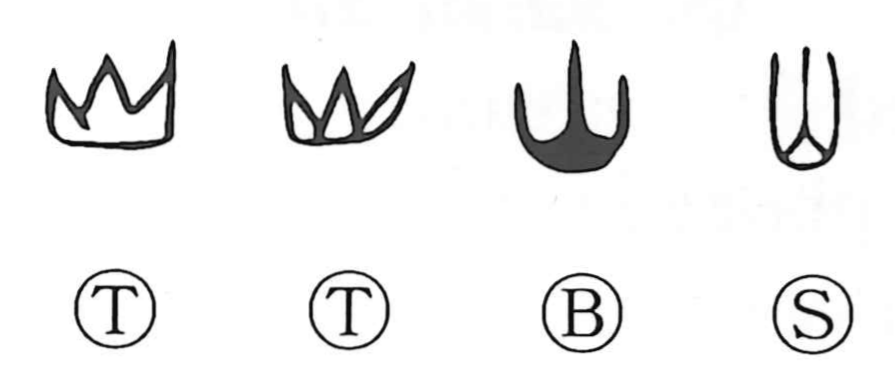

山

Kun: yama | On: san, zan
mountain ・ mountain range
Explanation
This character is a pictograph of a mountain range. Early forms sketch the silhouette of a lofty central peak with lower ridges spreading to left and right—the natural profile of Chinese mountains shaped by crustal movement and erosion. It does not show a single conical summit like Mt. Fuji born of volcanic eruption, but the expansive, tiered outline of a range. From this three-crested profile the graph 山 took shape.